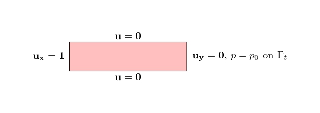

Poiseuille-Stokes Problem#
This examples focus on a pipe section for a Poiseuille-Stokes Problem. The boundary conditions are recalled here-after:

Implementation#
Libraries and python functions#
Similarly to the other examples, the first step is to import the libraries.
import dolfinx
import ufl
import basix
import mpi4py
import petsc4py
from dolfinx.fem.petsc import LinearProblem
import pyvista
import numpy
Mesh creation and marking#
The mesh is created within FEniCSx:
## Create the domain / mesh
Height = 1.0 #[m]
Width = 4.0 #[m]
mesh = dolfinx.mesh.create_rectangle(mpi4py.MPI.COMM_WORLD, numpy.array([[0,0],[Width, Height]]), [80,20], cell_type=dolfinx.mesh.CellType.quadrilateral)
The boundaries are marked using (tag, locator) tuples:
# 1 = bottom, 2 = right, 3=top, 4=left
boundaries = [(1, lambda x: numpy.isclose(x[1], 0)),
(2, lambda x: numpy.isclose(x[0], Width)),
(3, lambda x: numpy.isclose(x[1], Height)),
(4, lambda x: numpy.isclose(x[0], 0))]
#
facet_indices, facet_markers = [], []
fdim = mesh.topology.dim - 1
for (marker, locator) in boundaries:
facets = dolfinx.mesh.locate_entities_boundary(mesh, fdim, locator)
facet_indices.append(facets)
facet_markers.append(numpy.full_like(facets, marker))
# Concatenate and sort the arrays based on facet indices. Left facets marked with 1, right facets with two
facet_indices = numpy.hstack(facet_indices).astype(numpy.int32)
facet_markers = numpy.hstack(facet_markers).astype(numpy.int32)
sorted_facets = numpy.argsort(facet_indices)
facet_tag = dolfinx.mesh.meshtags(mesh, fdim, facet_indices[sorted_facets], facet_markers[sorted_facets])
#
#
with dolfinx.io.XDMFFile(mpi4py.MPI.COMM_WORLD, "tags.xdmf", "w") as xdmf:
xdmf.write_mesh(mesh)
xdmf.write_meshtags(facet_tag,mesh.geometry)
xdmf.close()
Mechanical parameters and loading#
The material, temporal and load parameters are defined:
# Dynamic viscosity
mu = 0.001
# imposed pressure
p0 = 10
Function Spaces, Functions and Operators#
The mixed function space, (u,p) in (P2v,P1) for stability concerns, is computed. The operators for the variationnal form are defined as:
# Define function space
# Finite Element
P1 = basix.ufl.element("P", mesh.topology.cell_name(), degree=1)
# Vector Element
P1_v = basix.ufl.element("P", mesh.topology.cell_name(), degree=1, shape=(mesh.topology.dim,))
P2_v = basix.ufl.element("P", mesh.topology.cell_name(), degree=2, shape=(mesh.topology.dim,))
# Mixed element
MxE = basix.ufl.mixed_element([P1,P2_v])
#
P1v_space = dolfinx.fem.functionspace(mesh, P1_v)
CHS = dolfinx.fem.functionspace(mesh, MxE)
#___________________________________________________________________________
# Define function & parameters
#
u_export = dolfinx.fem.Function(P1v_space)
u_export.name = "u"
#
sol = ufl.TrialFunction(CHS)
q, w = ufl.TestFunctions(CHS)
# Solution vector
p, u = ufl.split(sol)
#
# Definition of the normal vector
n = ufl.FacetNormal(mesh)
#
# Specify the desired quadrature degree
q_deg = 4
# Redefinition dx and ds
dx = ufl.Measure('dx', metadata={"quadrature_degree":q_deg}, domain=mesh)
ds = ufl.Measure("ds", domain=mesh, subdomain_data=facet_tag)
Boundary conditions#
Three different type of dirichlet boundary conditions are introduced:
no-slip conditions for the velocity on the top / bottom boundaries,
inflow of v_x=1 on the left boundary,
v_y=0 on the right boundary.
bcs = []
fdim = mesh.topology.dim - 1
#
def add_dirichlet_BC(functionspace,dimension,facet,value):
dofs = dolfinx.fem.locate_dofs_topological(functionspace, dimension, facet)
bcs.append(dolfinx.fem.dirichletbc(value, dofs, functionspace))
#
# No-slip boundary condition for velocity
# bottom
add_dirichlet_BC(CHS.sub(1).sub(0),fdim,facet_tag.find(1), petsc4py.PETSc.ScalarType(0.))
add_dirichlet_BC(CHS.sub(1).sub(1),fdim,facet_tag.find(1), petsc4py.PETSc.ScalarType(0.))
# top
add_dirichlet_BC(CHS.sub(1).sub(0),fdim,facet_tag.find(3), petsc4py.PETSc.ScalarType(0.))
add_dirichlet_BC(CHS.sub(1).sub(1),fdim,facet_tag.find(3), petsc4py.PETSc.ScalarType(0.))
#
# Inflow boundary condition for velocity
# left
add_dirichlet_BC(CHS.sub(1).sub(0),fdim,facet_tag.find(4), petsc4py.PETSc.ScalarType(1.))
add_dirichlet_BC(CHS.sub(1).sub(1),fdim,facet_tag.find(4), petsc4py.PETSc.ScalarType(0.))
#
# Outflow vy = 0
add_dirichlet_BC(CHS.sub(1).sub(1),fdim,facet_tag.find(2), petsc4py.PETSc.ScalarType(0.))
Variationnal form#
The objective is to find (u,p), such that:
where a((u,p),(w,q)) is known as the bilinear form, L((w,q)) as a linear form, and (w,q) are the test functions.
In our case, we have the variationnal form:
We can identify a and L such that:
This can be introduced as:
b = dolfinx.fem.Constant(mesh,(0.0, 0.0))
#
Id = ufl.Identity(2)
#
A1 = ufl.inner((- p*Id + mu*(ufl.sym(ufl.grad(u)))), ufl.grad(w))*dx
A2 = q*ufl.div(u)*dx
# Assembling of the system of eqs
A = A1 + A2
#
f = dolfinx.fem.Constant(mesh,(0.0, 0.0))
L = ufl.dot(b, w)*dx - p0*ufl.dot(n, w)*ds(2)
Problem Definition#
The problem and solver settings are defined.
# Debug instance
log_solve=True
if log_solve:
from dolfinx import log
log.set_log_level(log.LogLevel.INFO)
#
problem = LinearProblem(A, L, bcs=bcs, petsc_options={"ksp_type": "preonly", "pc_type": "lu"})
Post-processing and Solving#
Th problem is solved:
uh = problem.solve()
The solution is exported in a xdmf file:
# Get sub-functions
p_, u_ = uh.split()
p_.name = "p"
#
u_expr = dolfinx.fem.Expression(uh.sub(1),P1v_space.element.interpolation_points())
u_export.interpolate(u_expr)
u_export.x.scatter_forward()
#
#
xdmf = dolfinx.io.XDMFFile(mesh.comm, "2D_Stokes_Poiseuille.xdmf", "w")
xdmf.write_mesh(mesh)
t=0
xdmf.write_function(u_export,t)
xdmf.write_function(p_,t)
xdmf.close()
Pyvista can be used to create immediatly an image:
pyvista.start_xvfb()
topology, cell_types, geometry = dolfinx.plot.vtk_mesh(P1v_space)
values = numpy.zeros((geometry.shape[0], 3), dtype=numpy.float64)
values[:, :len(u_export)] = u_export.x.array.real.reshape((geometry.shape[0], len(u_export)))
# Create a point cloud of glyphs
function_grid = pyvista.UnstructuredGrid(topology, cell_types, geometry)
function_grid["u"] = values
glyphs = function_grid.glyph(orient="u", factor=0.2)
# Create a pyvista-grid for the mesh
grid = pyvista.UnstructuredGrid(*dolfinx.plot.vtk_mesh(mesh, mesh.topology.dim))
# Create plotter
plotter = pyvista.Plotter()
plotter.add_mesh(grid, style="wireframe", color="k")
plotter.add_mesh(glyphs, cmap='coolwarm')
plotter.view_xy()
plotter.save_graphic('result.pdf')
plotter.close()